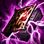

| Item | Pick Rate | Sell Rate | Mean Build Time | Mean Priority Score |
|---|
 Blasting Wand Blasting Wand | 0.443->0.414 | 0.0107->0.018 | 26:18->24:38 | 0.0->0.0 |
 Needlessly Large Rod Needlessly Large Rod | 0.501->0.732 | 0.00472->0.00636 | 26:15->24:13 | 0.0->0.0 |
 Rabadon's Deathcap Rabadon's Deathcap | 0.161->0.127 | 0.00735->0.00735 | 31:50->31:36 | 0.349->0.34 |
 Zhonya's Hourglass Zhonya's Hourglass | 0.164->0.163 | 0.0144->0.0057 | 32:06->29:39 | 0.336->0.373 |
 Luden's Echo Luden's Echo | 0.347->0.325 | 0.0136->0.01 | 25:12->23:05 | 0.538->0.586 |
 Rylai's Crystal Scepter Rylai's Crystal Scepter | 0.197->0.461 | 0.018->0.00707 | 28:46->25:15 | 0.427->0.527 |
 Archangel's Staff Archangel's Staff | 0.00472->0.00279 | 0.0->0.0 | 20:38->23:49 | 0.7->0.638 |
 Rod of Ages Rod of Ages | 0.0213->0.0237 | 0.0->0.0 | 22:33->21:34 | 0.669->0.643 |
 Haunting Guise Haunting Guise | 0.221->0.313 | 0.00535->0.0119 | 23:45->21:57 | 0.0->0.0 |
 Liandry's Torment Liandry's Torment | 0.164->0.227 | 0.0288->0.0123 | 28:44->26:54 | 0.443->0.461 |
 Void Staff Void Staff | 0.039->0.0279 | 0.0->0.0167 | 32:32->34:15 | 0.249->0.222 |
 Nashor's Tooth Nashor's Tooth | 0.0177->0.0102 | 0.0->0.0 | 28:04->29:00 | 0.5->0.384 |
 Will of the Ancients Will of the Ancients | 0.0177->0.0102 | 0.0667->0.0455 | 28:50->27:45 | 0.427->0.432 |
| Morellonomicon | 0.0248->0.0172 | 0.0476->0.0541 | 25:06->20:34 | 0.46->0.646 |
 Athene's Unholy Grail Athene's Unholy Grail | 0.00354->0.000931 | 0.333->0.0 | 37:28->35:57 | 0.256->0.2 |